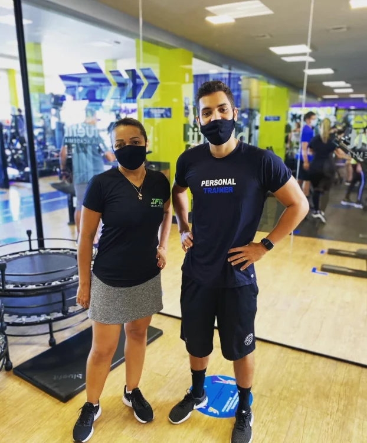
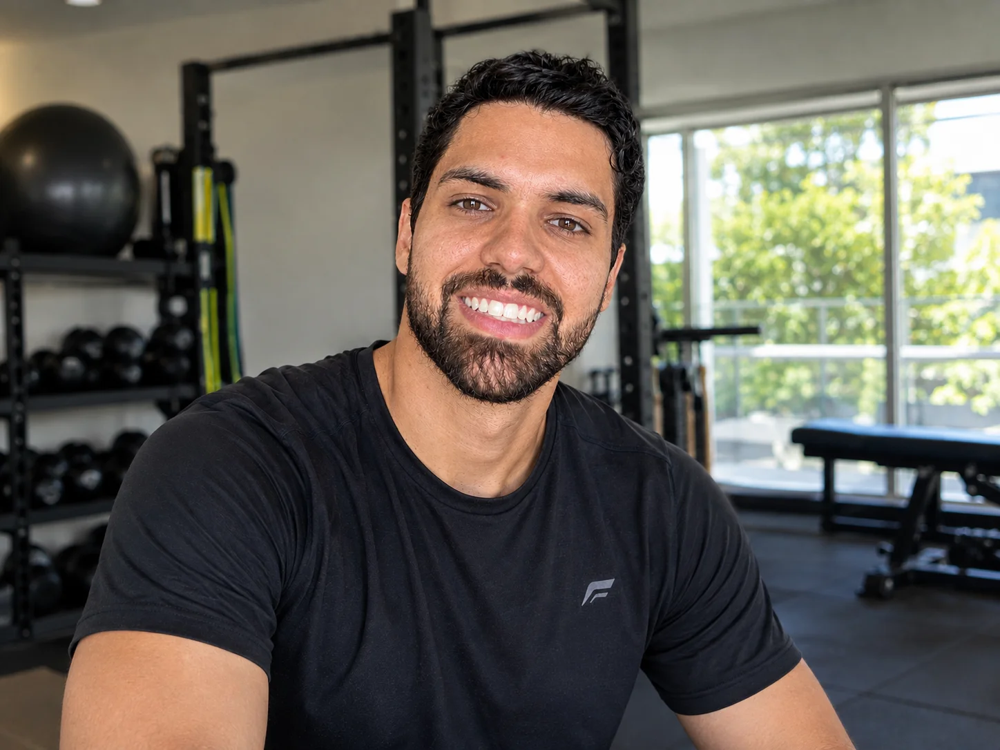
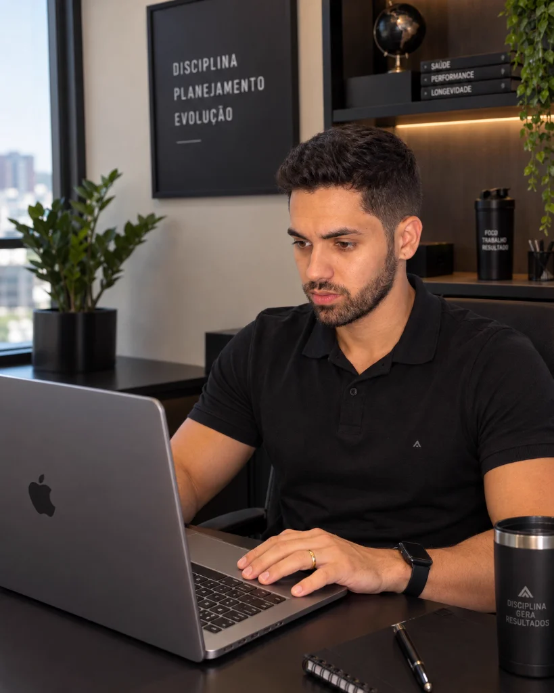
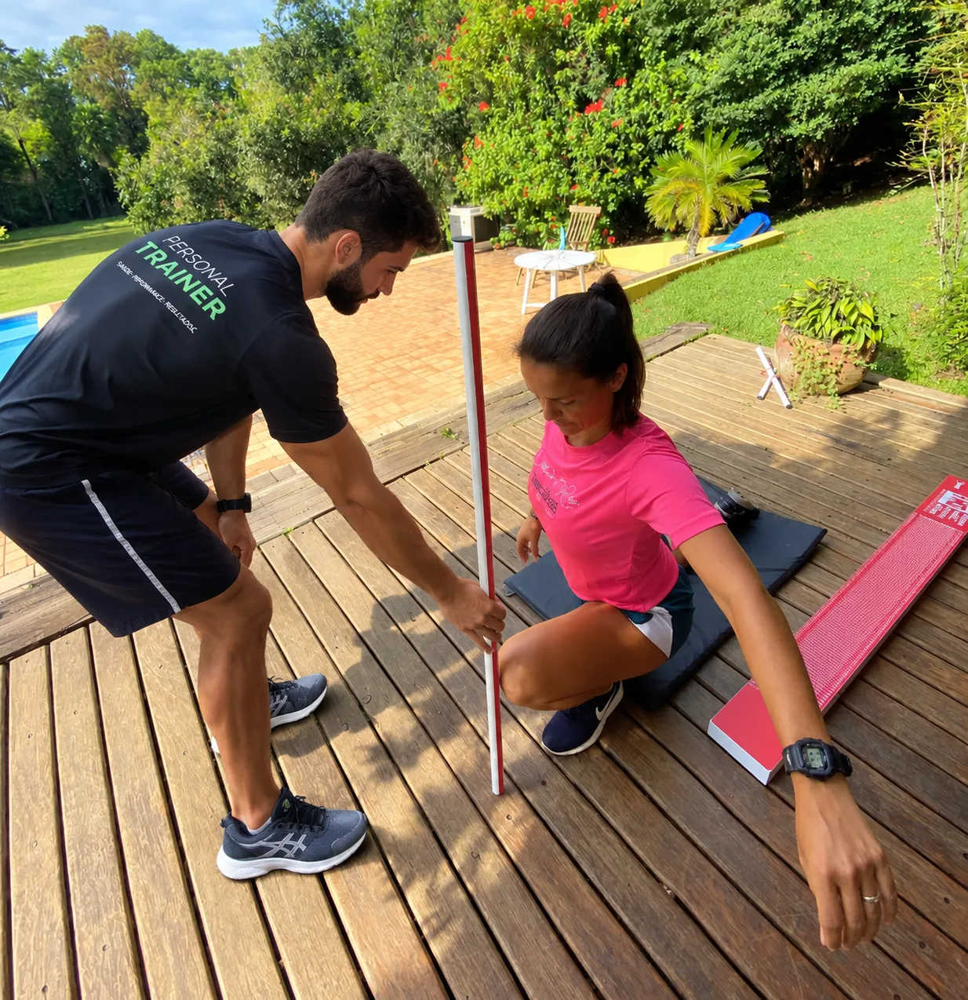
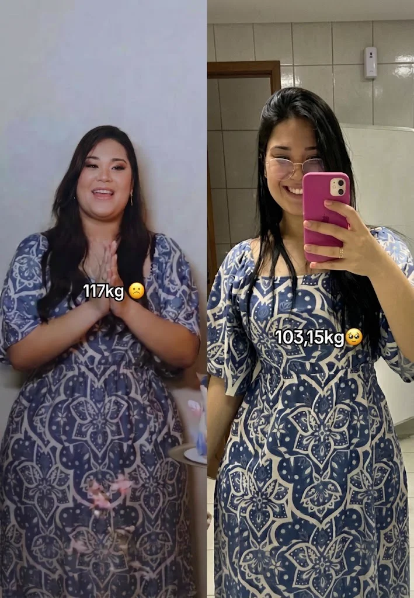
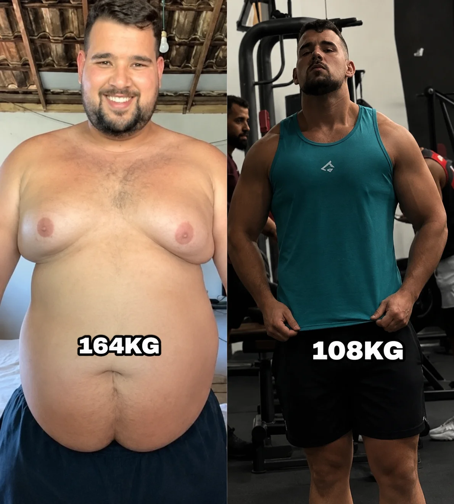
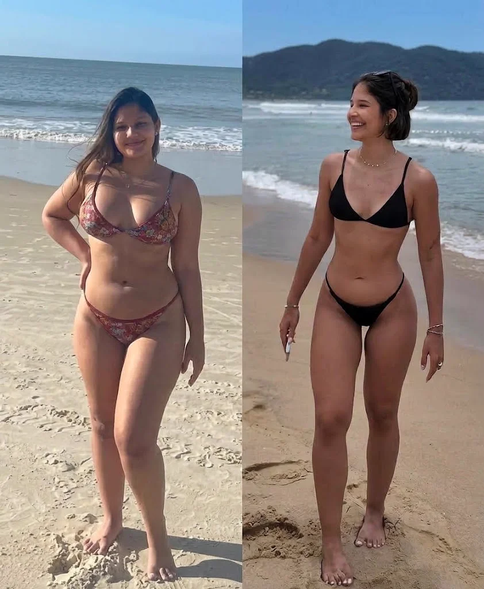
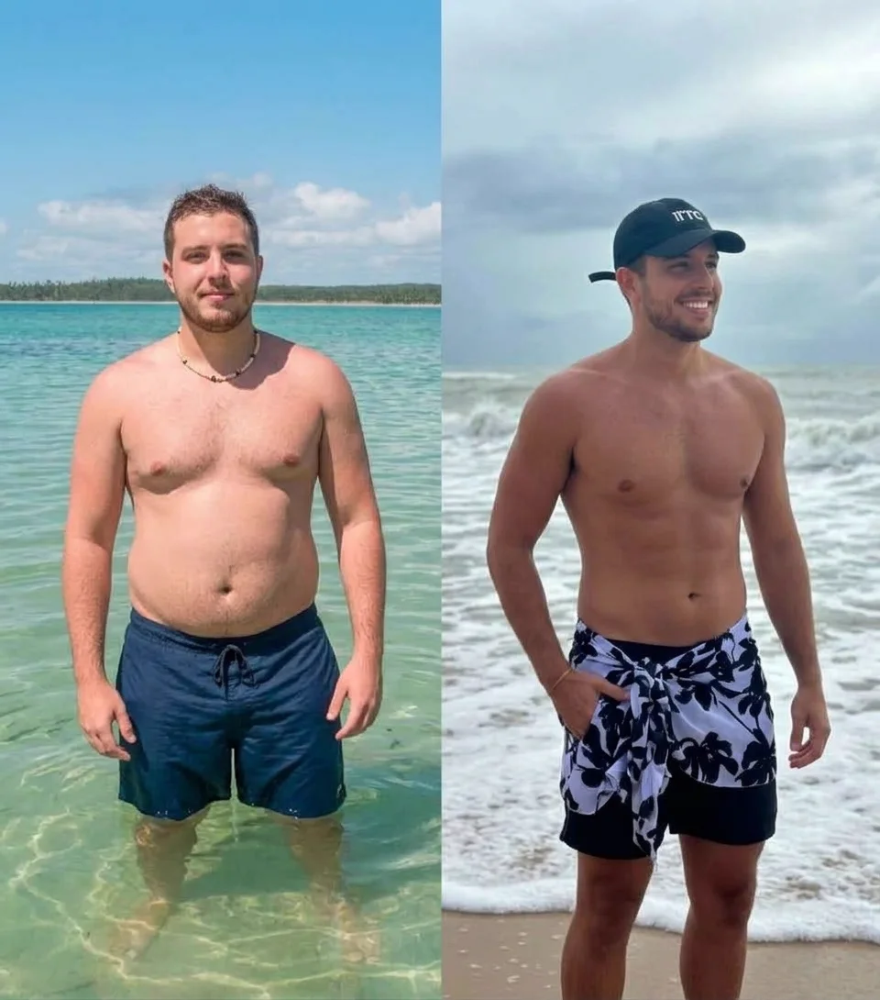
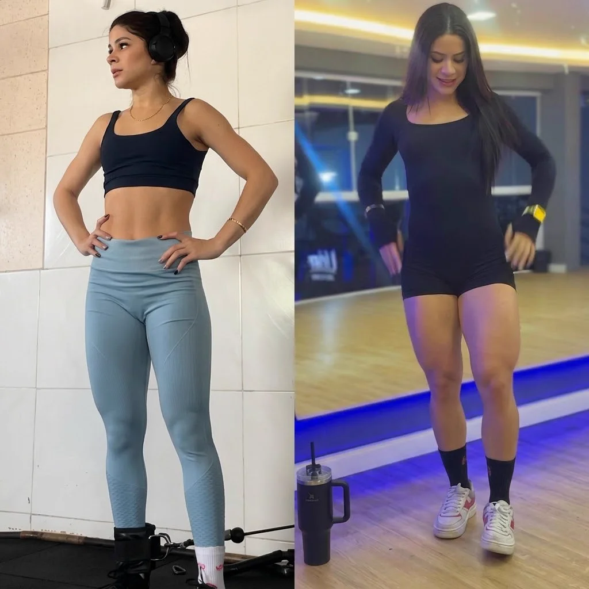
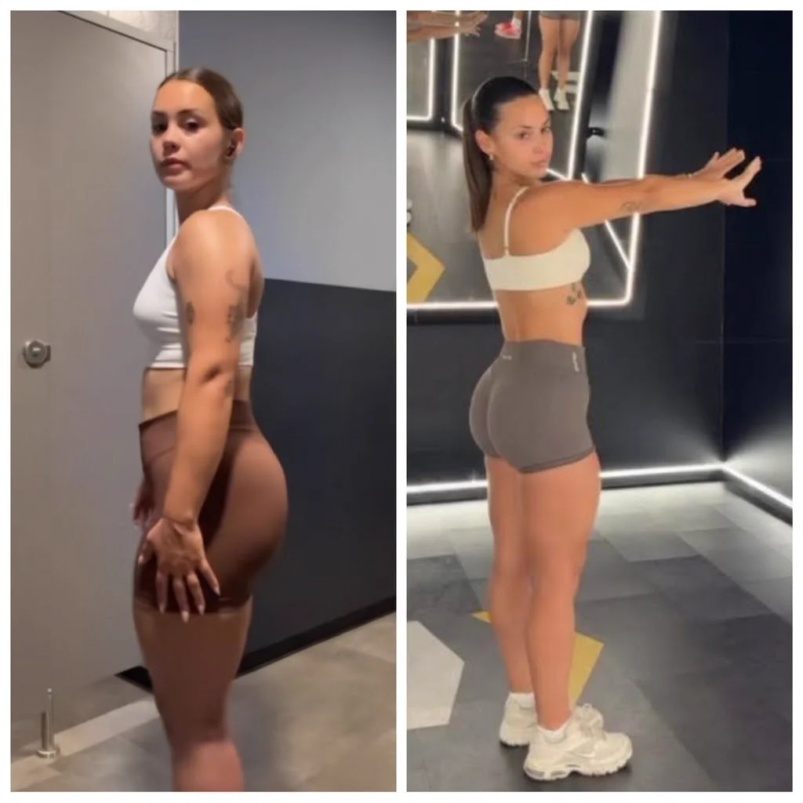

Chega de fichas genéricas ou de ficar perdido em academias lotadas. Você tem acompanhamento individualizado com metodologia científica, correção biomecânica em cada movimento e foco total na sua saúde e nos seus resultados.
Você escolhe o formato mais conveniente para o seu dia a dia. Sem trânsito e sem complicação:

Vou até a academia onde você já é matriculado em Jundiaí. Ajusto cargas, biomecânica e cadência para você evoluir sem risco de lesões.

Praticidade total descendo apenas o elevador. Aproveitamos ao máximo a academia do seu prédio ou condomínio fechado com total exclusividade.

Treine na sala, varanda ou quintal. Você não precisa ter equipamentos: levo elásticos, esteiras e acessórios funcionais adaptados ao seu nível.

Corrida, mobilidade articular, fôlego e condicionamento funcional respirando ar puro no Parque da Cidade ou na praça do seu bairro.
Cada organismo reage de uma forma. O treino é planejado cientificamente para a sua meta:
Aceleração metabólica para queima contínua de gordura com preservação de massa magra. Treinos dinâmicos para secar sem monotonia.
✓ Queima de gordura preservando tônusSobrecarga progressiva, correção biomecânica a cada repetição e quebra de platôs para ganho real de massa muscular densa.
✓ Evolução contínua sem estagnaçãoFortalecimento seguro, equilíbrio, prevenção ativa de quedas e mobilidade. Acompanhamento paciente no ritmo exato do aluno.
✓ Firmeza nos passos e autonomia diáriaExercícios posturais e fortalecimento de core para descomprimir a coluna, proteger joelhos e eliminar dores provocadas pelo sedentarismo.
✓ Treino com zero impacto lesivoPreparação física funcional para praticantes de beach tennis, corrida, futebol e tênis aumentarem o fôlego e prevenirem lesões.
✓ Explosão, fôlego e agilidadeMais energia para o trabalho e família, regulação do sono e controle da ansiedade através de rotinas consistentes e sustentáveis.
✓ Disposição física e longevidadeSem promessas irreais: evolução consistente com supervisão presencial em cada repetição:

Redução expressiva de medidas com treinos metabólicos direcionados, modelando o corpo sem dietas extremas.

Fortalecimento articular profundo, ganho de mobilidade e aumento radical de disposição no dia a dia.

Conquista de um corpo harmônico, sequinho e postura alinhada com supervisão presencial em cada treino.

Redução radical da gordura visceral, melhora do condicionamento e físico visivelmente mais atlético e funcional.

Evolução consistente com treinos que priorizam biomecânica correta, cargas calculadas e ativação máxima.

Desenvolvimento proporcional com sobrecarga progressiva, sem retenção e sem sobrecarregar as articulações.
Depoimentos de quem já transformou a saúde e a rotina em Jundiaí:
"O Felipe é extremamente pontual e atencioso. Treinar com ele me economizou muito tempo. Já perdi 8kg em 3 meses com total segurança."
"Tinha dores horríveis na lombar e medo de voltar para a academia. O Felipe vai comigo na academia comercial onde treino e corrige cada postura. Dor sumiu em 3 semanas!"
"Contratei para os meus pais que já têm mais de 65 anos. O atendimento em casa com paciência e método profissional devolveu a autonomia e disposição deles. Nota 10!"
Respostas rápidas e transparentes sobre locais, metodologia e horários:
Sim! Atendo em qualquer lugar de Jundiaí onde você preferir: vou até a sua academia comercial, no condomínio, na sua residência ou parques da cidade. Você escolhe o que for mais cômodo.
É uma sessão diagnóstica sem compromisso de permanência. Avaliamos sua mobilidade, histórico e objetivos, e realizamos uma prática leve para você experimentar como funciona o acompanhamento antes de definir seu plano.
Não! Se você não tiver equipamentos, eu levo acessórios funcionais modernos (elásticos de resistência, esteiras de solo, pesos portáteis) perfeitamente adequados ao seu treino.
Sim, e deve! O fortalecimento muscular supervisionado com biomecânica correta é o método mais eficaz para descomprimir a coluna e estabilizar articulações sem causar lesões.
Os pacotes variam de acordo com a frequência semanal (2x, 3x ou mais) e o local de atendimento em Jundiaí. Pelo WhatsApp eu passo todos os detalhes e opções de horários sem nenhum compromisso.
Agende uma conversa rápida no WhatsApp para alinharmos seus horários e tirar qualquer dúvida sobre a aula experimental.